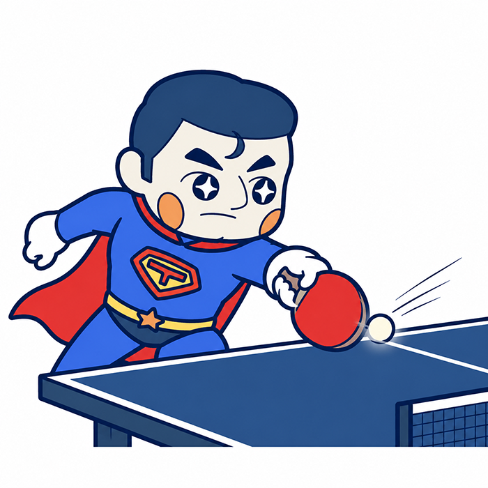

初心者向け
触れてみよう中国卓球「ツッツキ完全ガイド」
ツッツキと言うと、守りの技術や積極性にかけるイメージがあります。
男性はツッツキで繋ぐ意識よりも打っていくという
戦術の方が多いと思います。女性は力が弱い分、ツッツキでミスを減らして、チャンスボールを狙うなどの戦術を考えている方も多いと思います。
ミスを減らしたり安定したツッツキ、攻めやすくする横回転ツッツキやドライブを打たせないスピードの速いツッツキなど色々あると思います。 基本的な技術に加え、中国の独特なツッツキテクニックも参考まで見てみてもいいかもしれません！
まずは「速さ」より、ボールを転がす感覚を覚えよう。

ツッツキは、初心者から上級者まで使う非常に重要な技術です。
卓球の試合は、サーブとレシーブから始まります。 相手の回転が読み切れない場面でも、ツッツキを安定して返せれば、 すぐに失点するリスクを減らせます。
相手に先に打たせ、その後の展開で反撃することもできるため、 ツッツキは単なる守備技術ではありません。 試合を組み立てるための基本技術です。
レシーブからチキータで攻めれない、回転わからないけどドライブでどんどん持っていける。
そういうベストは選択でなくともツッツキがネガティブなイメージではなくレシーブとして有効である、ということを
認識できれば、自信を持って練習して実践にも活かせる、そう思って頂けるといいと思います！
ツッツキの構え方
足幅は、普段の構えと同じく、肩幅より少し広めにします。
ツッツキでは「右足を前に出す」と説明されることがありますが、 毎回必ず踏み込む必要はありません。
大切なのは、 右足でリズムと距離を調整することです。
ボールが浅ければ前へ踏み込み、 ちょうどよい位置に来れば、その場で打ちます。 踏み込むときも、強く床を踏むのではなく、 猫のように静かに入るイメージが適しています。
強く踏み込みすぎると上半身が不安定になり、 ミスにつながりやすくなります。
基本の打ち方
ラケット面は、滑り台のように斜め上へ向けます。
そこからボールの斜め下を捉え、 ラケットの上でボールを転がすように打ちます。
ここでいう「転がす」とは、ボールを前へ押すのではなく、 ラケット面で斜め下を捉え、摩擦を加えて回転をかける感覚です。
初心者が特に意識したいポイントは、次の3つです。
- バックスイングを大きく取らない
- ラケットをボールの近くまで運ぶ
- 打球点を急ぎすぎない
ラケットを後ろへ引きすぎると、ボールとの距離が遠くなり、 ラケットの角に当たりやすくなります。
構えた位置からそのままラケットを近づけ、 ボールを一度乗せてから飛ばすイメージが大切です。
打球点は、頂点付近か、少し落ち始めたところで構いません。 早く打とうとすると、ボールを押すだけの打ち方になりやすくなります。
最初は速いボールを求めない
初心者がよく陥る失敗は、 低くて速いツッツキを最初から打とうとすることです。
スピードを出そうとすると、ボールを擦らず、 前へ押すだけのプッシュになりがちです。
最初は、次の考え方で練習しましょう。
- ボールが少し高くてもよい
- スピードが遅くてもよい
- 擦って回転をかけることを優先する
ラケットの上でボールを長く持つような感覚が得られれば、 基本の第一段階はクリアです。
慣れてきたら、少しずつラケット面を下へ向け、 低く鋭いツッツキへ近づけていきます。
肘は固定しない
ツッツキを待つときに、最初から肘を高く上げたり、 腕を伸ばし切ったりすると、長いボールへの対応が難しくなります。
基本姿勢では、肘を体の近くへ自然に下ろし、 リラックスして構えます。
短いボールなら前へ入ってツッツキし、 長いボールならすぐにドライブへ切り替えられる状態が理想です。
ツッツキ専用の構えを作らず、 複数のボールに対応できる構えを保つことが大切です。
フォアツッツキのポイント
フォア側では、右足のつま先を少し外側へ向けると、 動きやすくなります。
ラケットのヘッドは真横ではなく、少し前へ向けます。 ここでもバックスイングはほとんど取らず、 ラケットを準備した位置からすぐに打ちます。
フォアツッツキも、最初は力加減を細かく考える必要はありません。 平均的な力でボールの斜め下を滑らかに捉え、 摩擦させることを優先します。
基本から発展する4種類のツッツキ
基本のツッツキを覚えると、 そこからさまざまな技術へ発展できます。
1．ストップ
ネット際へ短く止める技術です。
通常のツッツキより早い打球点で捉え、 ラケットをボールの位置へ置くように打ちます。
面は通常のツッツキより少し寝かせ、 バックスイングは取りません。
2．横回転ツッツキ
普通のツッツキをベースに、 ボールの真下ではなく横下を捉えます。
基本のツッツキができていない状態で行うと、 横へ押すだけになりやすいため、 まずは通常のツッツキを安定させることが前提です。
3．流し
相手の予想とは違うコースへ、 横回転を加えて返す技術です。
最初から手首を大きく使うと空振りしやすいため、 まずは体とラケット面を少し横へ向けた状態で、 普通のツッツキをするところから始めます。
慣れてから、少しずつ手首の動きを加えます。
4．刺すツッツキ
スピードのある鋭いツッツキです。
通常のツッツキよりも肘を上げ、 ある程度力をためた状態から打ちます。
ただし、初心者が早い段階で取り組むと、 ボールを押すだけの打ち方になりやすいため注意が必要です。
まずは基本のツッツキを、 自分で十分にコントロールできるようになることが先です。
「100本連続」が一つの目安
基本のツッツキを習得した一つの目安として、 ゆっくりしたボールを100本連続で安定して返せる状態を目指します。
これは絶対的な基準ではありませんが、
- ボールを擦る感覚がある
- 力加減を調整できる
- コースを安定させられる
という状態になってから、 刺すツッツキなどの発展技術へ進む方が、 変な癖が付きにくくなります。
習得時間には個人差がありますが、 元動画では合計30〜50時間程度が一つの目安として紹介されています。
毎日1時間練習するなら1〜2か月程度、 数日に一度なら数か月かけて身につけるイメージです。
長いボールもツッツキで返せるようにする
初心者は、
- 短いボールはツッツキ
- 長いボールは必ずドライブ
と考えがちです。
しかし、体勢が崩れているときや判断が遅れたとき、 長いボールを無理に攻撃すると、自滅する可能性があります。
フォア側でも、長い下回転をツッツキで安全に返せるようにしておくと、 試合で余裕が生まれます。
特にカットマンとの試合では長い下回転が多いため、 長いボールへのツッツキは実戦で役立ちます。
参考動画：初心者向けツッツキ解説。 本記事は動画内容を初心者向けに要約・再構成しています。
まとめ
初心者が最初に目指すべきなのは、 速くて鋭いツッツキではありません。
まずは、
- リラックスして構える
- バックスイングを大きく取らない
- ボールの斜め下を擦る
- ゆっくりでもよいので回転をかける
- 100本続けられる安定感を身につける
ことが重要です。
基本のツッツキが安定すれば、 ストップ、横回転、流し、刺すツッツキと、 自然に技術の幅を広げられます。
ツッツキは地味に見えるかもしれませんが、 レシーブを安定させ、相手を動かし、 自分の攻撃へつなげるための万能技術です。
強い一球を打つ前に、まずはミスをしない一球を身につける。
それが、試合で勝つための確かな土台になります。
"One Ball at a Time"